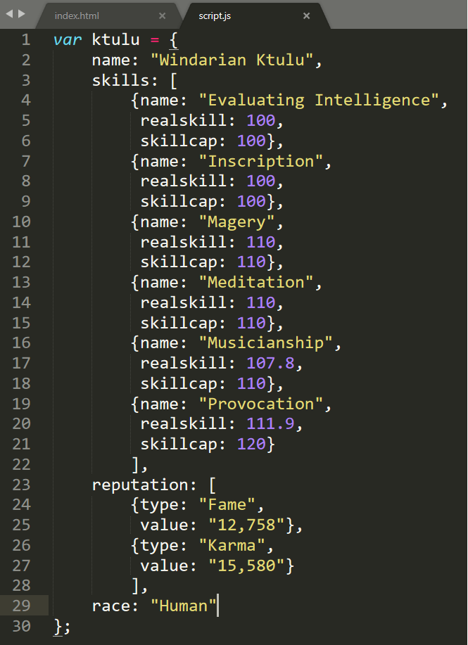
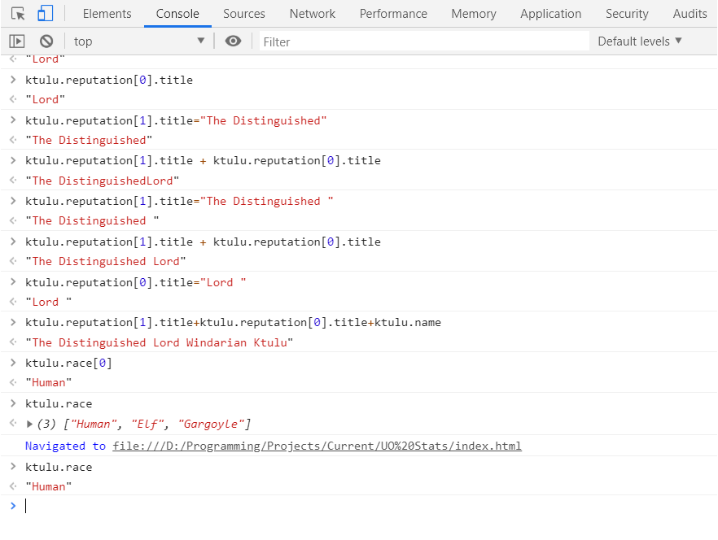

Day 13: June 25, 2019
Today's Progress
Today I spent time experimenting with JavaScript. I'm trying to figure out how I will eventually display badges once criteria are met. I accomplished this using a click event but eventually want to use a minimum score reached on a particular quiz for the scuba platform I want to develop. I also spent some time going through Flexbox Froggies and Grid Garden.
Thoughts
This is the first time I've really tried something new in JavaScript without ANY tutorial. It was very satisfying to accomplish the task I had given myself, even if it's only a first step in a much bigger project. I also found myself thinking through how I would approach this particular task all the way home from work today. I've thought about coding before of course but this time I really was working out the problem so I would have a plan of attack when I got home.
I have gone through both Flexbox Froggies and Grid Garden before but it has been a couple of months. This time, I went through both with no problem and not even a lot of thought. I feel like I am really mastering HTML and CSS. JavaScript is the next big goal and I'll start really feeling like a developer.
Day 12: June 24, 2019
Today's Progress
I finished the last two chapters of Flexbox Zombies today!
Thoughts
Although I'm still a little foggy on flex-basis, I think I'm pretty squared away on the other properties. I would love to try the developer's next game "Grid Critters" but that one's not free...it's $139. It's probably a great program but not something I can justify spending $139 on. Oh well...I have a decent grasp of CSS Grid right now so it's not a huge deal I guess.
Day 11: June 22, 2019
Today's Progress
Today I completed two chapters of Flexbox Zombies...only two to go before I'm finished. These two chapters covered the flex-wrap and align-content properties. On the Scuba Quiz, I added 12 more questions. I also experimented with making an image appear only if a specific checkbox is checked.
Thoughts
The two chapters of Flexbox Zombies were fairly straightforward. Flex-wrap is pretty easy to understand. Align-content took a little more thought to realize the difference between align-content and align-items but I think I've got it. I hope to finish the last two chapters tomorrow so that I will have completed the program.
It was very satisfying to figure out the JavaScript experiment on my own. I used W3C Schools but only as a resource. I worked on this as part of a much larger project related to my scuba quiz. The plan is to develop the quiz so that with certain scores, the player will be awarded badges.
Also...I added a day to the challenge because I was traveling home yesterday and didn't get to code at all. :-(
Day 10: June 21, 2019
Today's Progress
Today was all about finishing my first quiz app. I coded it to save and display the top five high scores. This was done using local storage. I tried to use JSON so I could keep the questions in a JSON file but that was a bit difficult. I also spent some time editing my portfolio page to include the scuba quiz.
Thoughts
I'm very happy to see the finished product...my scuba quiz! I learned a lot going this through project and have big plans to expand this into something even more awesome. I'm glad to finally have enough projects I'm happy with to post on my portfolio page. I still need to add my "100 Days of Coding" challenge log to my portfolio. I will probably do that tomorrow between trying to wrap up Flexbox Zombies chapters.
Day 9: June 20, 2019
Today's Progress
I worked on and finished chapter 8 of Flexbox Zombies today. This covered the "order" property of Flexbox.
Thoughts
The "order" property was much easier to grasp than flex-basis. It seems pretty straightforward. I wasn't able to work on much more than chapter 8 because of work commitments. Other than Flexbox Zombies, I spent a little time editing the code on this challenge page. Between learning JavaScript and finishing Flexbox Zombies, I'm going to figure out how to organize this challenge page so that instead of a big list of 100 days, it will be put into weeks.
Day 8: June 19, 2019
Today's Progress
Today I continued working on my quiz. I built the progress bar and now it not only keeps track of how many questions you've asked and how many are remaining, but also shows a green color when the answer is correct and a red answer when it's incorrect.
Thoughts
Building the progress bar and scorekeeper was not very difficult but I did have to go back and check some code when it wouldn't work correctly. I found that I was using an single quote where I should have been using the back tick mark instead. The quiz I'm building is just a simple four question quiz but I would like to expand that significantly. I'd like to make it a larger quiz...maybe 25 questions. I'd also like to build more quizzes that are related and connected. This one might be an entry level scuba diving quiz but the others could be on more specialized knowledge. With that, I want to learn how to build badges that can be earned depending on scores earned.
Day 7: June 18, 2019
Today's Progress
I spent a considerable amount of time today learning how to build a quiz game. I started with basic html and css to create the home and game pages and then worked with JavaScript to build the questions, scores, scorekeeper, etc.
Thoughts
I am following a tutorial on how to build a quiz but since he goes pretty fast, it forces me to stop and absorb everything we're going through to build this thing. Tomorrow is building a progress bar and then working out how to store high scores. Once I get this under control, I am going to turn this into a SCUBA quiz. Eventually, I will build quizzes for all levels of diving so students can test themselves when taking a particular certification. Making it relevant to my life/interests...this is how you make JavaScript learnable. :-)
Day 6.2: June 17, 2019
Today's Progress
Today there was no coding progress.
Thoughts
I worked on an Excel workbook today but most of it was formatting, not coding or formulas so I can't really count that. Then I had a long visit with family so there was no real coding today. That's okay...I'll add a day to the end of this challenge to make up for it.
Day 6: June 16, 2019
Today's Progress
I have returned to JavaScript. I went back to the "The Complete Web Developer in 2019: Zero to Mastery" course on Udemy. I rewatched the sections on function, objects, and arrays. I practiced with objects and arrays by doing something fun. I play Ultima Online (one of the few still playing 20+ years later) and thought it would be interesting to create some objects and arrays related to my character and some attributes. I created an object that included my character's name, skills, reputation, and race. I made "skills" and "reputation" into arrays. "Skills" has an array of the character's main skills (six skills) and each skill is an object that containts the properties "realskill" and "skillcap". "Reputation" has an array of two objects, "Fame" and "Karma", each with the properties "type" and "value". Here's a screenshot of the code:

Once I had that built, I went into the Chrome console and started messing around with accessing the objects and arrays and combining them. I added a new property to the "reputation" objects which was "title" and gave it a "value". For "Fame" the value is "Lord" and for "Karma" the value is "The Distinguished". Then in the console I added them together along with the character's name and got "The Distinguished Lord Windarian Ktulu". Here is a screenshot of the console:

Thoughts
It was pretty fun to practice my JavaScript and console by creating something with a game I enjoy. I was especially proud of myself for remembering how to add properties to objects through the console. This exercise also gave me a new perspective on gaming. I started thinking about how everything in a game can be broken down into functions, objects, arrays, etc. If I want to cast a certain spell, there is a function that is checking my character's skill level, reagents available, mana level, the stats of the target, any stat modifiers the character might have, etc. It makes the idea of creating something like Ultima Online into something that might not be doable for me, but I can certainly understand better how it was put together.
Day 5: June 15, 2019
Today's Progress
Today I started and finished chapter 7 of Flexbox Zombies which was all about the "flex-basis" property.
Thoughts
Today was a day full of travel so I did not get a lot of coding done. Once I got to my hotel, I went through chapter 7 of Flexbox Zombies and learned about the "flex-basis" property. I will probably need to go through it again. It seemed like it was explained thoroughly but I still don't firmly grasp it. It's a different way of setting height/width but is better somehow. I'm not sure exactly why but again, I'll probably need to repeat chapter 7.
Day 4: June 14, 2019
Today's Progress
I had about three and a half hours of code today. It started with Flexbox Zombie, chapter 6 which covered the "flex-grow" and "flex-shrink" properties. I then spent the rest of the time figuring out how to add a countdown timer to my challenge page.
Thoughts
Chapter 6 in Flexbox Zombies was the hardest so far. Being able to tell the difference between how much an element grows compared to the other elements is a bit tricky. Not only that, but even after I had it down, something with the alignment would keep me from passing the test. It's not that I don't understand the alignment properties and how to use them. The problem is that I'm focused mostly on that particular chapter's lesson and forget about checking for the things covered previously. The JavaScript timer I added to this page would have been a challenge since I'm still far from comfortable with JavaScript. For this particular instance I chose to look up the code, copy/paste it, and then modify it to my liking. This is not how I want to get in the habit of coding but I plan on spending a lot of time on days 6-11 going back to my JavaScript lessons and hitting those hard. Also, as a sidenote, since I do most of my coding at night, it's a challenge to remember to push any of my code to Github before midnight and then my Github activity shows that I missed a day. I didn't...but it looks like I did. I need to get into the habit of making sure I push some of my work to Github before midnight.
Day 3: June 13, 2019
Today's Progress
I spent an hour today working on chapter 5 in Flexbox Zombies which was focused on the "flex-grow" property. I also spent about five hours today building a complicated Excel workbook for my job. This workbook will build a growth plan for Exploring, the youth program I manage. The local office just has to enter a few current statistics and the workbook will give them all of the targets they need to reach.
Thoughts
It was pretty good and I got a decent grasp on it but the "stretch" align property still gets me most of the time. Today's Excel work was a lot of complex formulas and while that's not my main focus, it definitely flexed my "developer" mind so it definitely counts. I haven't done that in a long time and it was a lot of fun. I have a large list of goals for this challenge but learning more advanced Excel skills and even VBA programming is on my to-do list at some point.
Day 2: June 12, 2019
Today's Progress
I spent my hour of code today on Flexbox Zombies. I finished through chapter four which means I've covered align-items, align-self, justify-content, and flex-direction.
Thoughts
I really enjoy practicing coding skills using games like Flexbox Zombie. The first game I played to learn Flexbox was Flexbox Froggy. Then I tried Grid Garden to get a handle on CSS grid. Flexbox Zombies is even better for Flexbox than Flexbox Froggies so I'd like to try the developer's next game, Grid Critters, but it costs $139. The rest of them are free. Oh well for now.
Day 1: June 11, 2019
Today's Progress
Today is set-up day for this challenge. I have created a new Twitter account to join the "100 Days of Coding" Challenge and spent some time setting up this log. For this challenge, I have some goals:
-
Strengthen my knowledge of HTML. I have a good grasp of it but would like to learn more about proper element tags and meta tags.
-
Strengthen my knowledge of CSS. I feel pretty comfortable with CSS but need to practice CSS Grid more to get a better understanding of responsive grids. I also need to learn more about media queries and some of the more advanced animations in CSS.
-
Dive deeper into JavaScript. I have begun learning it but I do not have a good grasp of it and need to relearn some things and practice more.
-
I want to learn about SVG images. It seems like a very powerful tool to have.
-
I want to begin working on some personal projects that could become something larger as my knowledge increases. I do not want a portfolio full of calculators and to-do lists.
-
I would like to start learning PHP. Most of the internet uses Wordpress and PHP is the appropriate language.
-
I want to learn SQL. I enjoy working with databases and think this could be very interesting.
-
I want to explore the development of Wordpress themes.
-
I need to improve my aesthetic skills. i.e., typography, color theory, and UX design.
-
I need more practice using Github so I can keep a good record of all code work.
I will work through this challenge and accomplish these goals using a variety of sources and education, including:
-
Various Udemy courses, starting with Andrei Neagoie's "The Complete Web Developer in 2019: Zero to Mastery"
-
Free Code Camp
-
The Odin Project
-
W3 Schools
I will also include in this log any milestones I reach during this challenge.
Thoughts
With full-time work that involves a lot of travel, a wife and two kids, and managing a Cub Scout pack full of little guys and girls, this challenge is going to be...a challenge. I have set a hefty list of goals above but I already have a headstart on HTML and CSS.
Sidenote...this log is intentionally a very basic site. My coding focus will be elsewhere throughout the challenge.
Milestone
At the start of this challenge, I have already completed the Responsive Web Design Certification on www.freecodecamp.org.